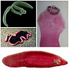

platyhelminthes

Has synonym(s): flatworm
Definition: The flatworms, flat worms, Platyhelminthes, or platyhelminths (from the Greek πλατύ, platy, meaning "flat" and ἕλμινς (root: ἑλμινθ-), helminth-, meaning "worm") are a phylum of relatively simple bilaterian, unsegmented, soft-bodied invertebrates. Unlike other bilaterians, they are acoelomates (having no body cavity), and have no specialized circulatory and respiratory organs, which restricts them to having flattened shapes that allow oxygen and nutrients to pass through their bodies by diffusion. The digestive cavity has only one opening for both ingestion (intake of nutrients) and egestion (removal of undigested wastes); as a result, the food cannot be processed continuously.
Source: Wikipedia
Wikipedia Page (Something wrong with this association? Let us know.)
Wikidata Page (Something wrong with this association? Let us know.)